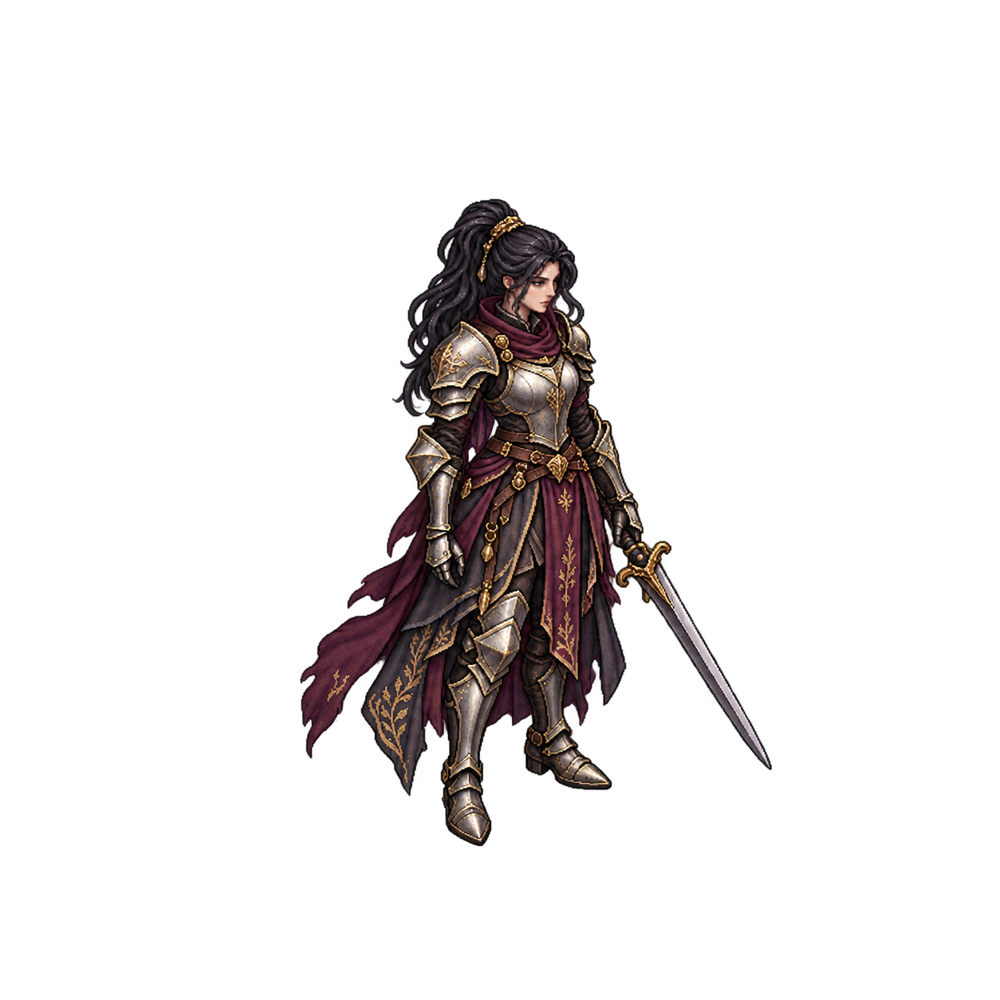
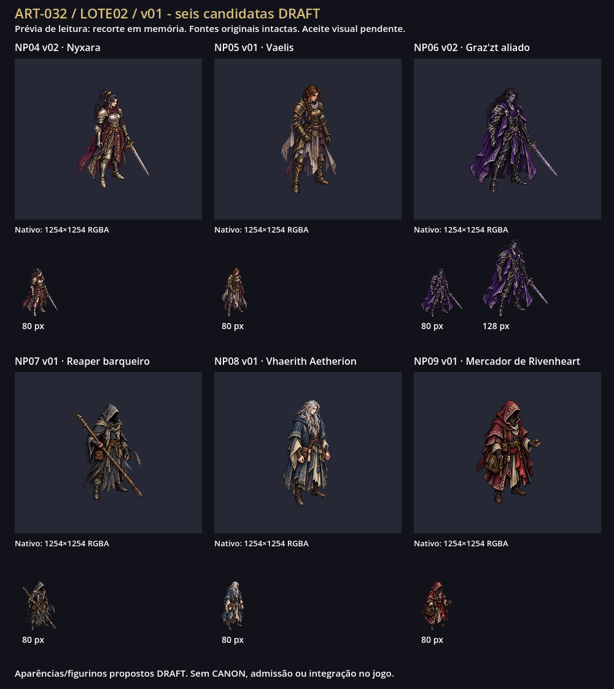
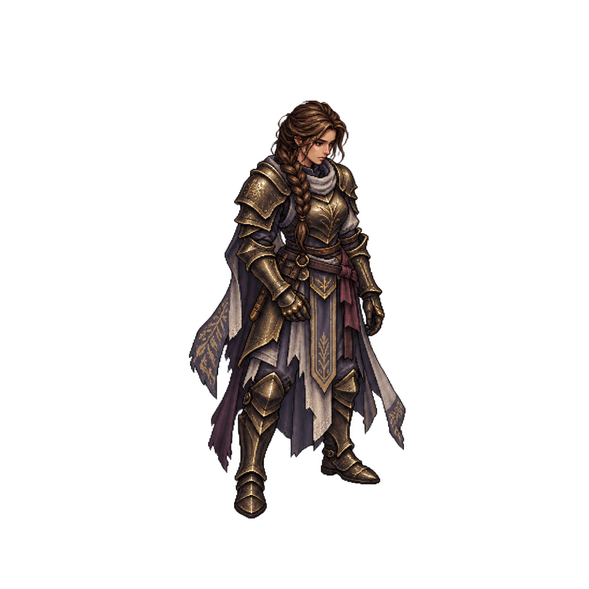
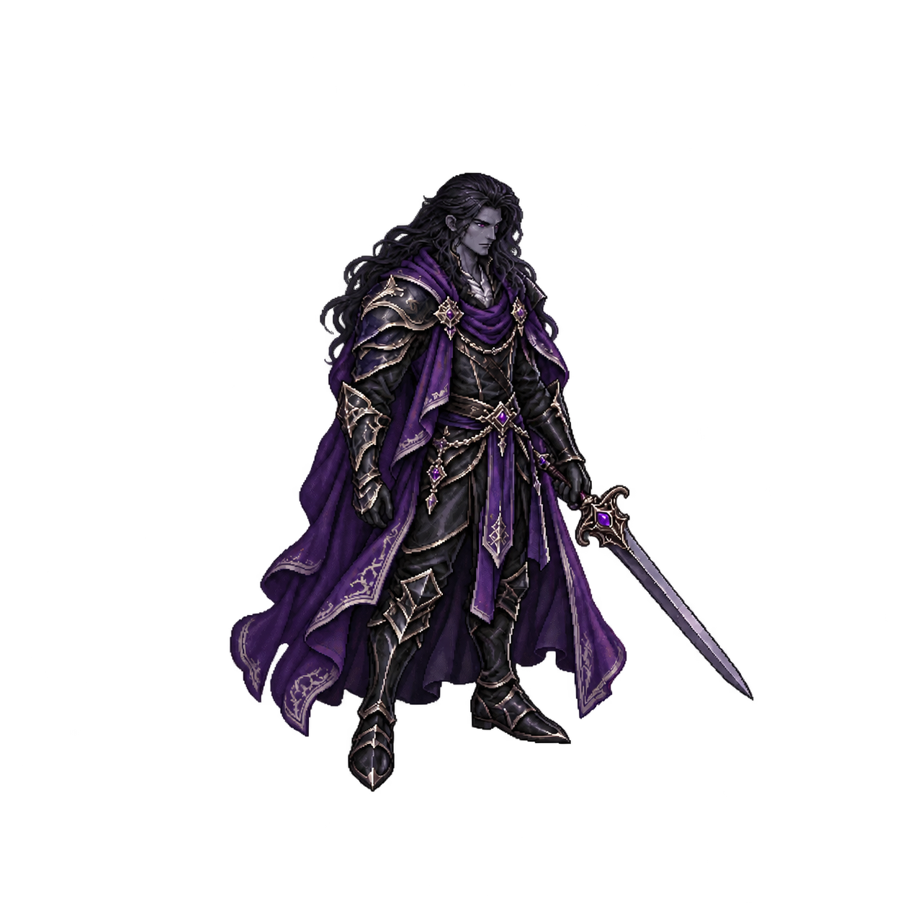
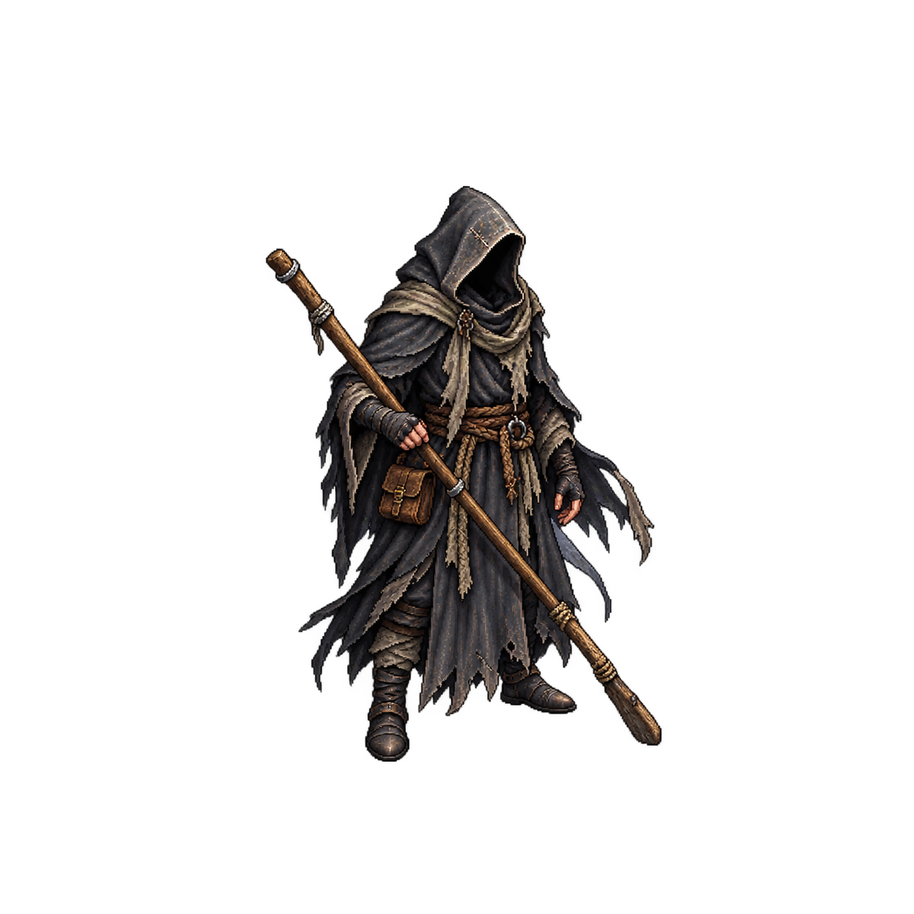
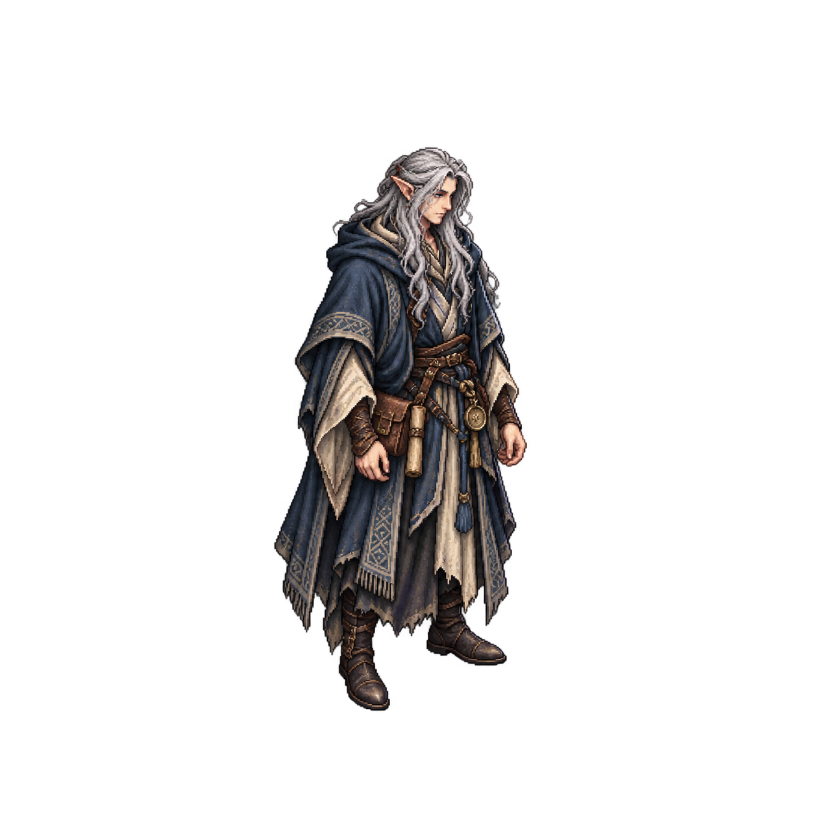
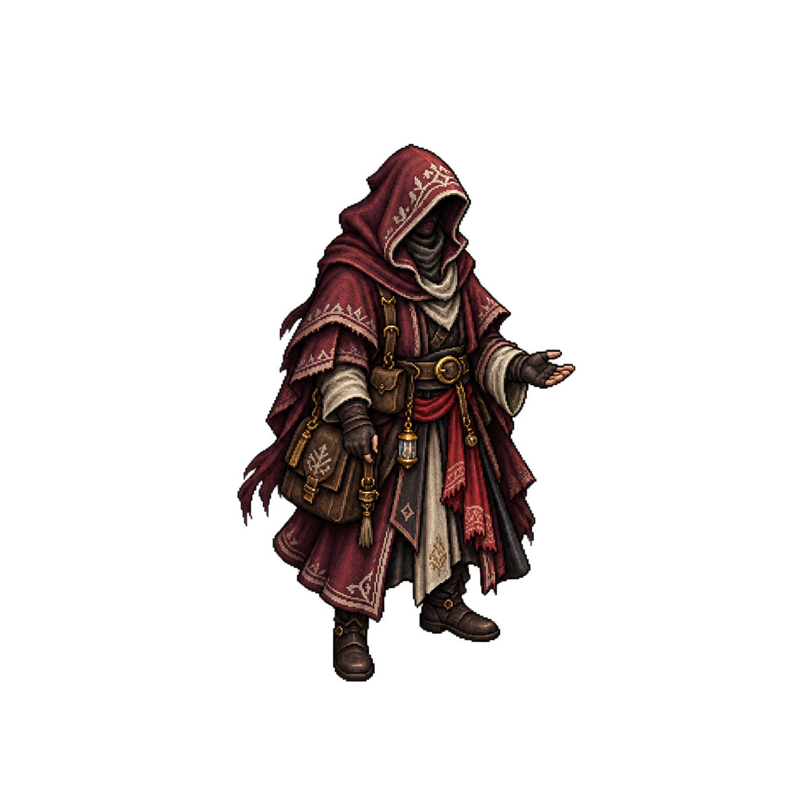

NP04 · Nyxara v02 · DRAFT


Nyxara v02: margem corrigida; figurino/identidade proposta DRAFT.
80 px de altura visível
1254×1254 RGBA · margem 15.31% · alfa na borda 1/255
O dono respondeu “Aprovo visualmente as seis revisões”. Recibo das seis revisões/hashes. As fontes continuam DRAFT.
Candidatas: NP04 Nyxara v02, NP05 Vaelis v01, NP06 Graz’zt v02, NP07 Reaper v01, NP08 Vhaerith v01, NP09 mercador v01. Fontes nativas 1254×1254 (pedido 1024×1024), copiadas byte a byte. Margem mínima contratada 10%, cumprida em todas. Cinco fontes têm resíduo nativo de alfa 1/255 na borda; Vhaerith tem borda exatamente transparente. Nenhuma limpeza ou redimensionamento nativo.
Prévia recorta só em memória a caixa alfa > 8 e desenha o motivo a 80px/128px; não é tamanho runtime final. A política do navegador bloqueia file://, portanto esta galeria foi conferida por links/metadados e por prancha estática Godot, sem alegar teste de renderização do HTML. Clique nos PNGs para ver as fontes.

Auditoria · Origem/hashes · Prompts completos
Carregando prévias…

Nyxara v02: margem corrigida; figurino/identidade proposta DRAFT.
1254×1254 RGBA · margem 15.31% · alfa na borda 1/255

Vaelis v01: trança, bronze e tecido claro diferenciam a outra guia; aparência DRAFT.
1254×1254 RGBA · margem 11.88% · alfa na borda 1/255

Graz’zt v02: corrigida a orelha élfica não prevista; pele/traje DRAFT, sem fixar espécie canônica.
1254×1254 RGBA · margem 12.28% · alfa na borda 1/255

Reaper v01: rosto oculto e vara de barqueiro; sem canoa, cenário ou afirmação de morto-vivo.
1254×1254 RGBA · margem 16.59% · alfa na borda 1/255

Vhaerith v01: identidade élfica documentada; aparência e adornos DRAFT. Pergaminho no cinto não representa a runa devida; sem jaula incorporada.
1254×1254 RGBA · margem 12.60% · alfa na borda 0/255

Mercador v01: papel anônimo, espécie/gênero não definidos; figurino/adornos DRAFT.
1254×1254 RGBA · margem 14.51% · alfa na borda 1/255
NP04 v01 preservada · NP06 v01 preservada ·
Revisar diferenciação de Nyxara/Vaelis, identidade proposta de Graz’zt, leitura do Reaper, Vhaerith e mercador; estilos/câmera e gestos. Aparências/adornos não documentados são hipóteses DRAFT. Aceite visual por revisão tem gate próprio; contrastes sobre mapas e playtest são futuros.